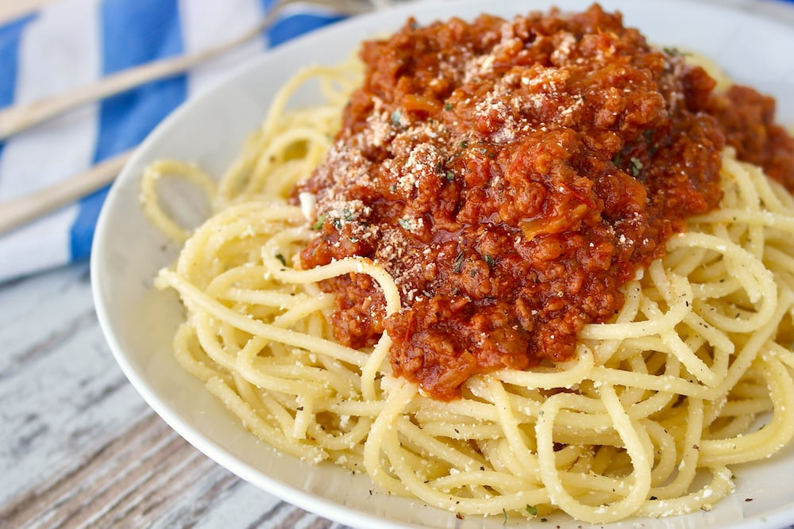

Preston's Mom's Spaghetti!

The Background
Dear Google: Please let this story get me on the top of your results when people look up spaghetti recipes. Ahem.
My father's mother's father came to the US from Italy to dodge conscription in WWI. This was generally seen as a good move. It also basically makes me Italian and, thus, a regular Spaghetti master. I will not be taking questions or criticisms.
The Ingredients
- Tomato sauce
- Noodles
- Garlic powder
The Instructions
- Boil a bunch of water.
- Some people will say to salt your water but they're wrong. Sodim is dangerous. Minimize your salt intake at all costs.
- Put in the noodles.
- While the noodles boil in your unsalted water, pour your sauce in a microwaveable bowl
- Add garlic powder. Your heart will know when to stop.
- Microwave the sauce for about 2 minutes.
- When the noodles are soft and smushy, they're done. Drain the water and add the sauce.
- Eat it
Return to the recipe page.